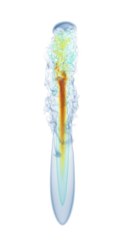

Smooth interfaces for brick-decomposed neural volumes using four ghost cells
Based on Wurster et al., Adaptively Placed Multi-Grid Scene Representation Networks for Large-Scale Data Visualization, IEEE TVCG 2024
